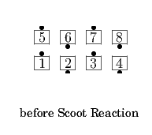
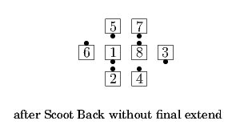
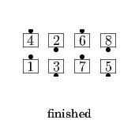
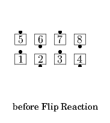
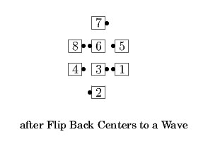

<anything> (Cross) Reaction
The <anything> call is one where the modifier "(Centers) to a Wave" would result in a 1/4 Tag. The dancers do the <anything> call to that point, and then do a full Chain Reaction (or Cross Chain Reaction). Conventions for how the <anything> call is named in this context are explained in the subsections below.
Scoot (Chain Thru) (Cross) Reaction
From Parallel Ocean Waves: Scoot Back (or Scoot Chain Thru), Centers to a Wave (i.e., leaving off the final Extend); then do a full Chain Reaction (or Cross Chain Reaction). Note that for a Scoot Back, the word "Back" is not spoken.
  
<tag> (Cross) Reaction
The starting formation depends on the <tag> action. Do the Scoot Back variation of that tagging action (i.e. get to the 1/2 Tag position and then Scoot Back) leaving off the final Extend, then do a full Chain Reaction (or Cross Chain Reaction).



Note that there is an unspoken "Back" (Scoot Back) in this case, e.g., Tag Reaction means Tag Back Reaction. The center wave always does the trading action of the Scoot Back before starting the Chain Reaction.
<anything> (Cross) Reaction
For any other applicable call, do that call (Centers) to a Wave, then do a full Chain Reaction (or Cross Chain Reaction). This is most commonly used at C-3A with calls in the Transfer the Column family, e.g., Triple Play Cross Reaction. (Note: The specific case of Open Up the Column Reaction is typically abbreviated as "Open Up Reaction".)
© Copyright 2004-2017 Vic Ceder and CALLERLAB Inc., The International Association of Square Dance Callers. Permission to reprint, republish, and create derivative works without royalty is hereby granted, provided this notice appears. Publication on the Internet of derivative works without royalty is hereby granted provided this notice appears. Permission to quote parts or all of this document without royalty is hereby granted, provided this notice is included. Information contained herein shall not be changed nor revised in any derivation or publication.